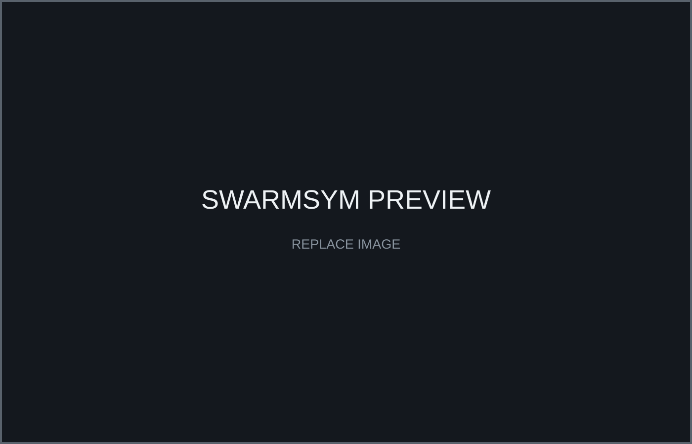
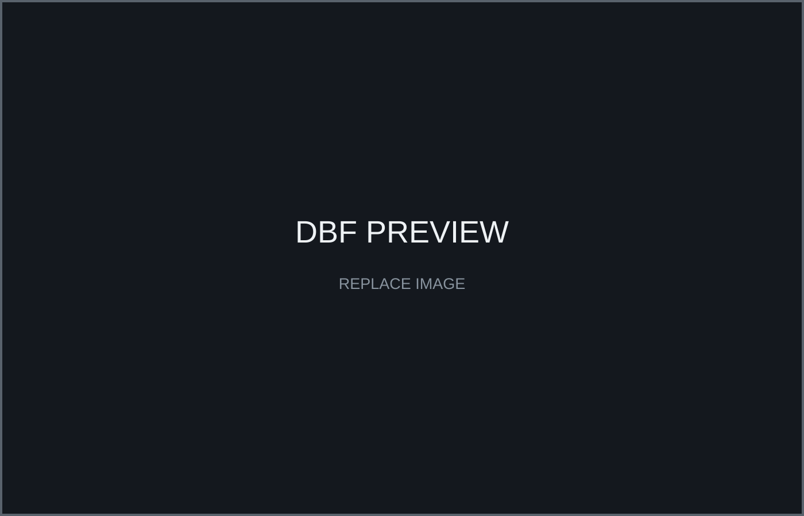
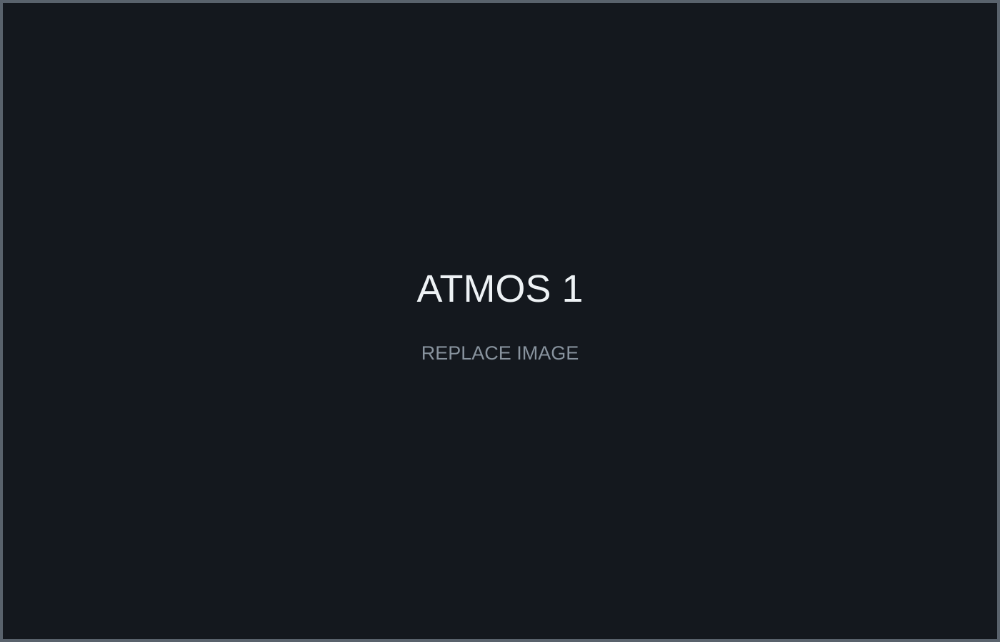
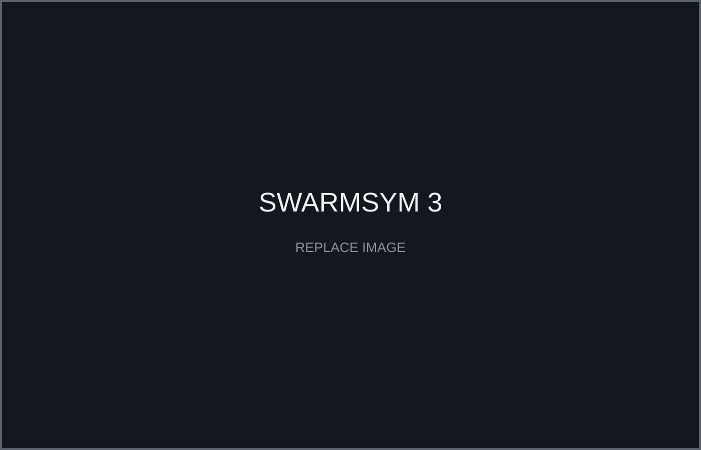
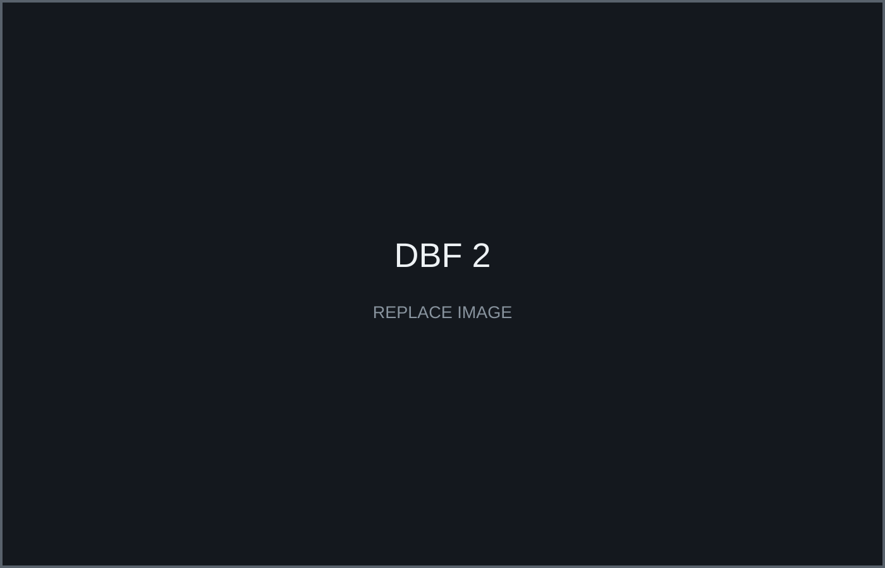

ATMOS — Autonomy Testbed for Multi-purpose Orbiting Systems
Free-flying spacecraft testbed for simulation, motion tracking, hardware integration and autonomous systems validation.
View project ↗Click a project to open technical details, architecture, results, media and external links.
Free-flying spacecraft testbed for simulation, motion tracking, hardware integration and autonomous systems validation.
View project ↗ROS 2 / PX4 / Isaac Sim / Sionna environment for multi-UAV communications, networking, failures and recovery studies.
View project ↗
Payload, sensing and telemetry integration with post-flight trajectory reconstruction and aerodynamic analysis.
View project ↗Propulsion matching and aircraft electrical architecture; 14th of 110 teams worldwide at Wichita.
View project ↗
Canard aircraft design, annular-nozzle combustion, Pilatus PC-12 electrical modeling, autonomous agricultural aircraft electronics and ANSYS CFD.
View project ↗Autonomy Testbed for Multi-purpose Orbiting Systems — a free-flying spacecraft testbed for autonomous space-systems research.
Repository integration, ROS 2/Gazebo/PX4 simulation, motion-capture interfaces, IoT instrumentation and hardware-validation workflows.

Framework for reproducible swarm-of-drones and Swarm-Network-as-a-Service simulations.
Network topology, SNR, capacity, routing, communication-aware autonomy, UAV failures and recovery strategies.
Framework development, telemetry, failure injection, standby integration and communication-performance analysis.

Integrated payload, sensing and telemetry systems for Spaceport America Cup 2025, enabling flight-data acquisition and post-flight trajectory reconstruction.
Propeller–motor–battery matching and aircraft electrical architecture. Qualified and flew at Wichita, finishing 14th of 110 teams worldwide.
